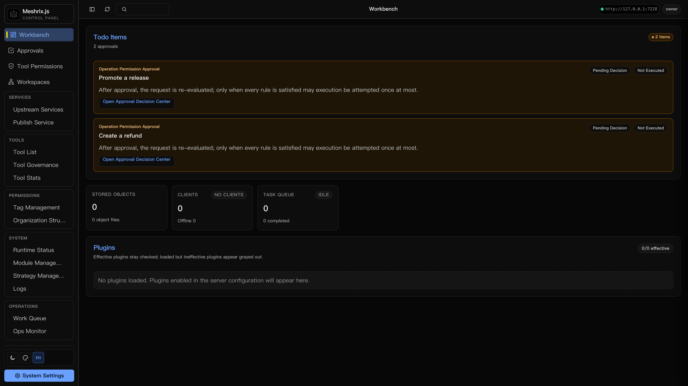
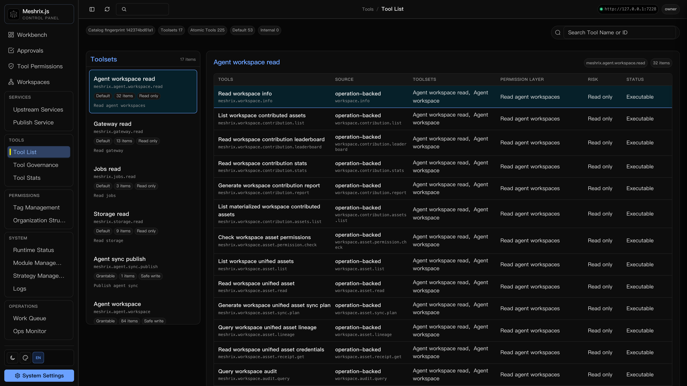
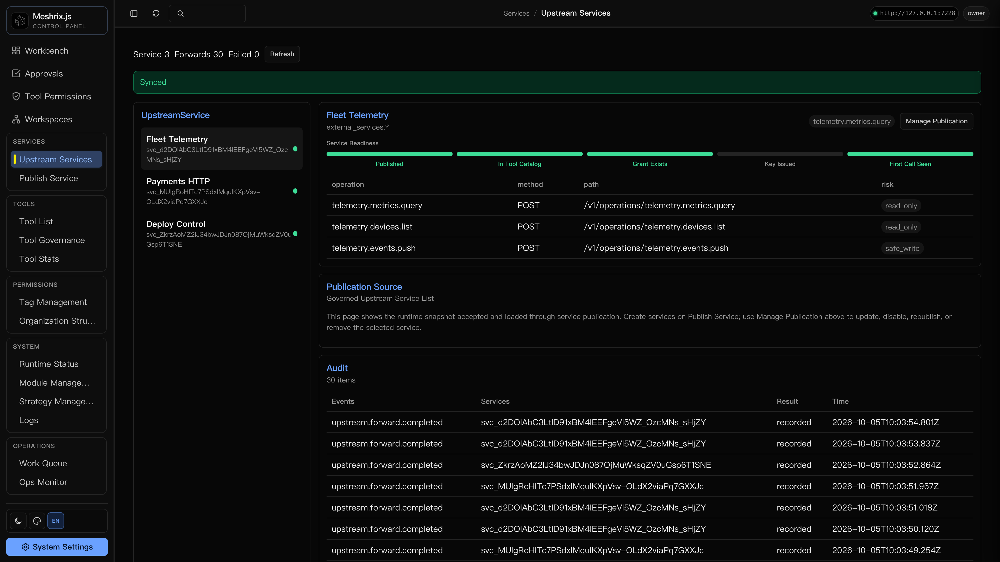
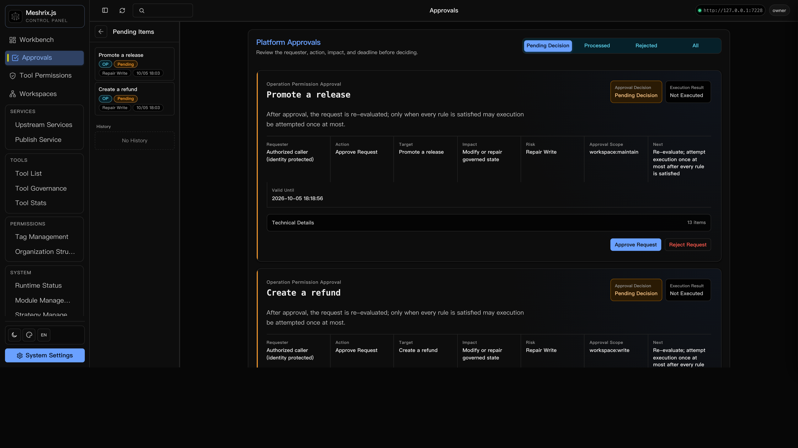

The agent tool platform that can prove what it did.
Meshrix.js connects your agents to HTTP and MCP services behind one governed
gateway. Pactium, the proof layer beneath it, seals every operation
into an append-only, cryptographically verifiable ledger. Run both on your own infrastructure.
npm install --global meshrix.js✦pactium v0.8.3 — apache-2.0✦append-only ledger✦prolly tree proofs✦scoped api keys✦approval gates✦mcp · http✦sealed ✓ 7f3a…c9e2✦npm install --global meshrix.js✦pactium v0.8.3 — apache-2.0✦append-only ledger✦prolly tree proofs✦scoped api keys✦approval gates✦mcp · http✦sealed ✓ 7f3a…c9e2✦
// the console
Govern by group. Approve by exception.
Agents call tools constantly — nobody reviews each request by hand. You define toolsets
and scoped keys once; routine traffic flows inside those boundaries, and only an
exceptional high-risk call pauses for a human. Everything below is the real Web
Console, captured live — not a mockup.




live · workbench
// the stack
Two layers. One contract of trust.
The platform you operate, and the substrate that proves it — published as two independent
npm packages. Meshrix.js consumes Pactium through its public package API; each layer also
stands on its own.
Meshrix.js the platform
Apache-2.0
Connect HTTP and MCP services, govern which clients may discover and call each tool,
and operate everything from the Web Console. Requires Node.js 22.19+ or 24.3+.
Proof-first protocol substrate: an append-only operation ledger, Prolly Tree indexes,
and portable proof envelopes for verifiable state. Host-neutral and independently
usable — it contains no Meshrix-specific aspect.
pactiumledger · proofs · CLI · http adapter
// platform
Your services, governed for agents.
Publish existing services through one MCP endpoint. Scoped keys decide what each client
can see and do; the Console shows everything that happens next.
01Web Console
Service health, keys, calls, and logs — day-to-day operation in one surface.
console — 127.0.0.1:7228
stripe-http12 toolsok
files-mcp5 toolsok
deploy-prod2 toolsapproval
calls / min
02Scoped API keys
Each client sees only what its key allows. Upstream credentials stay on the server.
mxk_7f3a…c9e2tools:readfiles:writedeploy:deny
03Approvals
Sensitive calls wait for a human decision.
agent-07 → deploy.prod
⏸ requires approval
approvedeny
04Upstream gateway
HTTP and MCP services behind one endpoint.
HTTPMCPHTTP→mcp://one
05Embeddable gateway
The typed Gateway API inside your own Node app, independent of the platform runtime.
npm i @meshrix/gateway
06Private deployment
Runs where you already operate. Local state stays in the data directory you choose.
meshrix-server --data-dir ~/.meshrix
// substrate
Proof, not logs.
Pactium records immutable operation facts and mints proof envelopes you can verify locally,
export, and re-verify anywhere — without trusting the host that produced them.
Both packages are early and iterating in public. APIs can still evolve; the status and
compatibility documents are the contract, not the marketing. A project about verifiable
proof should not ask for unverifiable trust.